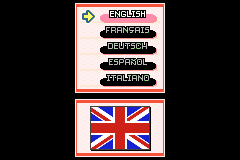

Advance Wars 2 - Black Hole Rising (Europe) (En,Fr,De,Es,It) (Virtual Console)
Flash 512K Save Format Mapped (Family Spec) 💾 MultiBoot 🎮 4P Link
Cartridge Identity
- Game Code
AW2P(FamilyAW2)- Header Title
ADVANCEWARS2- Maker / Revision
01/ rev0- ROM Size
- 8.0 MiB (8,388,608 B)
- Save Media
Flash 512K- SHA-256
2f18fd1510920cc01fb68b98575a5040c057f542cd2dadd2b241c20e09a79c43- Engine / SDK Group
comm-009(51 families)
Screenshots


Link Cable & Multiplayer Communications
This title contains detected communication capabilities: 💾 MultiBoot 🎮 4P Link.
Detailed protocol specifications, SIO registers, Joybus commands, and MultiBoot sequences are documented in the Link & Multiplayer Reference.
- Multi-Player SIO (4P)
- 16-bit ring network · SIOCNT (
0x04000128) literals:0x02ed40,0x02edf4,0x02ee50· SIODATA32/SIOMULTI0 (0x04000120) literals:0x02f0a8,0x0637fc,0x063860 - Single-Cart MultiBoot
- Single-Cartridge MultiBoot (Download Play) client/server handler · Thumb SWI 0x25 (
0xDF25):0x08b59e,0x0a9a88,0x19ebfa,0x2a0656
Battery Save Format Specification (Family Shared)
This release shares its save architecture with canonical family reference Advance Wars 2 - Black Hole Rising (USA) (Family
AW2).
Open Family Save Format Spec (AW2E)Download save-format.json
- Canonical Specification
AW2E· 19 mapped fields · 0 verified checksum(s) · Confidence: MEDIUM- gbakit Built-In Support
- Built-in (AW2E)
gbakit save verify AW2E save.sav
gbakit save decode AW2E save.sav
gbakit save fix AW2E damaged.sav -o repaired.savObserved Battery Save Layout
- Fill Byte & Active Size
0xFFfill · 1,548–1,548 / 65,536 B active (entropy 0.17 bits/B)- Active Offset Ranges
0xF000–0xF061,0xF063,0xF068,0xF06B,0xF06D–0xF06E,0xF071,0xF074–0xF075,0xF07C–0xF55D, +2 more (10 total)- ASCII Magic / Headers
2ars- Observed Variable Regions
- 0 bytes across 0 spans: None
- Candidate Checksum/Counter Spans
- None
Text, Fonts & Scene Data
- Primary Text Encoding
- Plain ASCII (uncompressed) (
5,777ASCII strings ·28Shift-JIS runs ·4LZ77 ASCII blocks) - Font & VWF Indicators
- VWF Width Table 1bpp Font · BIOS SWIs: BitUnPack
0x10:32· LZ770x11/12:25· Huffman0x13:9· RLE0x14/15:13 - Scene & Packaging
40ROM pointer tables (≥32 entries,3≥200) ·0relativeu32TOCs ·136OAM metasprite hits
Hardware MMIO Subsystems
ppu_display0x8012484,0x801b7acsave_bus_sram_flash0x808b5cc,0x808b92c,0x808b9d8,0x808bbc0
Regional Variants & Revisions (Family AW2)
- Advance Wars 2 - Black Hole Rising (Europe) (En,Fr,De,Es,It) (
AW2P, 8 MiB) - Advance Wars 2 - Black Hole Rising (USA) (
AW2E, 8 MiB) - Advance Wars 2 - Black Hole Rising (USA) (Virtual Console) (
AW2E, 8 MiB)